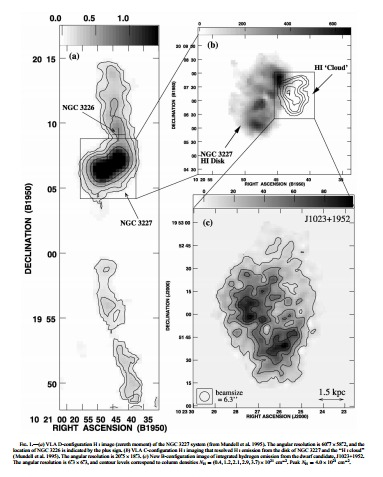

{kind=link}
RFI or not-RFI?: that is the question
On Monday morning's run, 13.01.14, it was report that there was rfi at 1414 MHz at several positions. Here are some lines from the log file:H102224.2+192320 102226.2 +192317 j 1300 H v # A208712 0927 13.3 15 301400057 RFI at 1414 A102232.2+192341 102232.2 +192341 j 1000 H v # A208711 0935 11.3 16 301400061 RFI at 1414 A102253.2+193436 102253.2 +193436 j 1000 H v # A208717 0944 9.25 17 301400065 RFI at 1414 H102314.1+193221 102316.1 +193220 j 1300 H v # A208713 0951 7.61 18 301400069 RFI at 1414 H102326.4+193937 102328.3 +193938 j 1300 H v # A208714 1001 5.33 19 301400073 Oscillating baseline (RFI?)But, it turns out this is not RFI; these are real HI signals. Note that the positions observed are all fairly close to one another in the sky. And, in fact, there are a bunch of galaxies at redshifts around 1100-1300 km/s in that field. Here is a list of AGC galaxies within 1 degree of the Code 1 ALFALFA source without an optical counterpart AGC 208712:
AGC # Name Position sep(')
202045 094-005 1020561+200920 70 68 157 170 1794-98 136 352 1546 87 P50D138 0 0 0 8 0 50.69
5590 N3213 1021174+193904 110 80 143 150 1412 27 166 96 1347 160 M500154 0 0 133 6 0 22.63
208712 HIdet 1022262+192317 0 0 0 0 0 0 255 390 1282 28 A50J875 0 0 0 0 0 0.00
208711 1022322+192341 16 14 180 400 0 0 0 0 0 0 00 0 0 0 0 8 0 1.47
208717 mph 1022532+193436 20 18 180 400 0 0 0 0 0 0 00 0 0 0 0 8 0 12.98
718673 1023154+201040 52 29 160 0 1151-98 0 0 0 0 00 0 0 0 0 8 0 48.78
208713 HIdet 1023161+193220 0 0 0 0 0 0 179 301 1311 17 A50J875 0 0 0 0 0 14.84
718681 1023216+200138 66 45 149 0 1166-98 0 0 0 0 00 0 0 0 0 8 0 40.51
739353 1023224+195451 20 17 168 11 1338-98 0 0 0 0 00 0 0 0 106 8 0 34.23
5617BN3226 1023270+195354 250 220 133 15 1275 27 679 0 1169 398 P5001-1 0 0 15 6 0 33.80
208714 HIdet 1023283+193938 0 0 0 0 0 0 235 285 1301 31 A50J875 7 0 0 0 0 21.94
208715 HIdetnr 1023287+195604 0 0 0 0 0 0 288 169 1307 116 A50J875 0 0 0 0 0 35.93
5620AN3227 1023306+195154 650 450 122 140 1170 27 1500 0 1148 483 01-1 0 0 155 8 0 32.39
718719 1024347+200157 55 36 159 0 1028-98 0 0 0 0 00 0 0 0 0 8 0 49.09
208716 HIdet 1024390+200914 0 0 0 0 0 0 52 162 1189 25 A50J875 0 0 0 0 0 55.57
202046 ADBS 1025178+200725 41 14 0 0 0 0 356 369 1210 45 P50D138 0 0 0 0 0 59.82
H102224.2+192320 102226.2 +192317 j 1300 H v # A208712 0927 13.3 15 301400057 RFI at 1414
1022262+192317 155.6092 19.3881 DR7Navigate DR9Navigate SkyView.03 SkyView.10 DSS2red.03 DSS2blu.03 DSS2red.10 DSS2blu.10 NED1.0 A102232.2+192341 102232.2 +192341 j 1000 H v # A208711 0935 11.3 16 301400061 RFI at 1414
1022322+192341 155.6342 19.3947 DR7Navigate DR9Navigate SkyView.03 SkyView.10 DSS2red.03 DSS2blu.03 DSS2red.10 DSS2blu.10 NED1.0 A102253.2+193436 102253.2 +193436 j 1000 H v # A208717 0944 9.25 17 301400065 RFI at 1414
1022532+193436 155.7217 19.5767 DR7Navigate DR9Navigate SkyView.03 SkyView.10 DSS2red.03 DSS2blu.03 DSS2red.10 DSS2blu.10 NED1.0 H102314.1+193221 102316.1 +193220 j 1300 H v # A208713 0951 7.61 18 301400069 RFI at 1414
1023161+193220 155.8171 19.5389 DR7Navigate DR9Navigate SkyView.03 SkyView.10 DSS2red.03 DSS2blu.03 DSS2red.10 DSS2blu.10 NED1.0 H102326.4+193937 102328.3 +193938 j 1300 H v # A208714 1001 5.33 19 301400073 Oscillating baseline (RFI?)
1023283+193938 155.8679 19.6606 DR7Navigate DR9Navigate SkyView.03 SkyView.10 DSS2red.03 DSS2blu.03 DSS2red.10 DSS2blu.10 NED1.0 Now, take a look at this one:
1023288+195321 155.8700 19.8892 DR7Navigate DR9Navigate SkyView.03 SkyView.10 DSS2red.03 DSS2blu.03 DSS2red.10 DSS2blu.10 NED1.0 and maybe center on this one:
1023306+195154 155.8775 19.8650 DR7Navigate DR9Navigate SkyView.03 SkyView.10 DSS2red.03 DSS2blu.03 DSS2red.10 DSS2blu.10 NED1.0 which you can investigate further here. How extended is the HI in the VLA image? Where are the ALFALFA detections? Update Wednesday morning: Here is the Mundell et al. image with coordinates (but look closely at them; there is a trick!)
{kind=link}

Click on the image to see a larger version.
The AGC entries within 2 degrees of NGC 3227 and cz < 2000 km/s or unknown:
velmin=-999 to include gals w no cz : -999 2000 Enter center position as: hhmmsssSddmmss 1023306+195154 Opened northminus1 file correctly sep in arcmin 718530 1018228+212331 57 18 166 0 1408-98 0 0 0 0 00 0 0 0 0 8 0 116.53 718531 1018409+212249 45 22 169 0 1289-98 0 0 0 0 00 0 0 0 0 8 0 113.40 200255 124-001 1019010+211656 80 60 153 10 1079 6 215 149 1083 46 P50G144 0 0 0 0 0 105.89 202045 094-005 1020561+200920 70 68 157 170 1794-98 136 352 1546 87 P50D138 0 0 0 8 0 40.26 5590 N3213 1021174+193904 110 80 143 150 1412 27 166 96 1347 160 M500154 0 0 133 6 0 33.87 208686 mph 1022140+180622 20 12 185 180 0 0 0 0 0 0 00 0 0 0 0 8 0 107.08 208712 HIdet 1022262+192317 0 0 0 0 0 0 255 390 1282 28 A50J875 0 0 0 0 0 32.39 **** 201039 1022268+213549 70 20 0 0 0-99 0 0 0 0 00 0 0 0 0 0 0 104.98 208711 1022322+192341 16 14 180 400 0 0 0 0 0 0 00 0 0 0 0 8 0 31.39 **** 208717 mph 1022532+193436 20 18 180 400 0 0 0 0 0 0 00 0 0 0 0 8 0 19.41 **** 718673 1023154+201040 52 29 160 0 1151-98 0 0 0 0 00 0 0 0 0 8 0 19.10 208713 HIdet 1023161+193220 0 0 0 0 0 0 179 301 1311 17 A50J875 0 0 0 0 0 19.86 **** 718681 1023216+200138 66 45 149 0 1166-98 0 0 0 0 00 0 0 0 0 8 0 9.96 739353 1023224+195451 20 17 168 11 1338-98 0 0 0 0 00 0 0 0 106 8 0 3.52 5617BN3226 1023270+195354 250 220 133 15 1275 27 679 0 1169 398 P5001-1 0 0 15 6 0 2.17 208714 HIdet 1023283+193938 0 0 0 0 0 0 235 285 1301 31 A50J875 7 0 0 0 0 12.28 **** 208715 HIdetnr 1023287+195604 0 0 0 0 0 0 288 169 1307 116 A50J875 0 0 0 0 0 4.19 5620AN3227 1023306+195154 650 450 122 140 1170 27 1500 0 1148 483 01-1 0 0 155 8 0 0.00 5629 1024129+210301 140 110 170 310 1260 6 636 301 1238 128 M500154 0 0 0 6 0 71.80 718719 1024347+200157 55 36 159 0 1028-98 0 0 0 0 00 0 0 0 0 8 0 18.11 208716 HIdet 1024390+200914 0 0 0 0 0 0 52 162 1189 25 A50J875 0 0 0 0 0 23.64 202046 ADBS 1025178+200725 41 14 0 0 0 0 356 369 1210 45 P50D138 0 0 0 0 0 29.58 5653 I 610 1026283+201342 190 25 148 140 1204 0 202 114 1170 293 F500166 0 0 29 6 0 47.08 718778 1026310+201700 43 23 175 0 1163-98 0 0 0 0 00 0 0 0 0 8 0 49.24 739467 1027375+200443 54 27 168 11 1268-98 0 0 0 0 00 0 0 0 87 8 0 59.41 5675 M+327047 1028300+193346 200 150 180 310 1111 30 352 224 1104 103 P200119 0 0 0 6 0 72.76 208701 mph 1029524+191354 35 30 190 400 0 0 0 0 0 0 00 0 0 0 0 8 0 97.65 201488 094-083b 1031387+192825 0 0 0 600 0-99 0 0 0 0 00 0 0 0 0 9 0 117.28update Wed morning: Here are two screenshots from GRIDVIEW of velocity channels of the "a" grid at 1020+19:
Click on the image to see a larger version.
Notice the velocities of the channels grabbed in these screenshots. Finally, here is the screenshot of the GALCAT view of the source HI102224.2+192320_1020+19a, the bright peak in the 2nd screenshot above.
Comments??
{kind=link}
{kind=link}
{kind=link}
{kind=link}